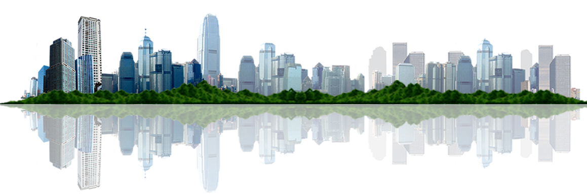

<div class="custom-div-img"></div>
<nav class="custom-main-navbar">
	<ul>
		<li><a routerLink="/accueil" routerLinkActive="active">Accueil</a></li>
		<li><a routerLink="/form" routerLinkActive="active" id="estimerMonBien">Estimer mon bien</a></li>
		<li><a routerLink="/methodes" routerLinkActive="active">Nos méthodes</a></li>
		<li><a routerLink="/contact" routerLinkActive="active">Contact</a></li>
	</ul>
</nav>
<div class="custom-container">
	<div>
	  <router-outlet #routerOutlet="outlet"></router-outlet>
	</div>
</div>
